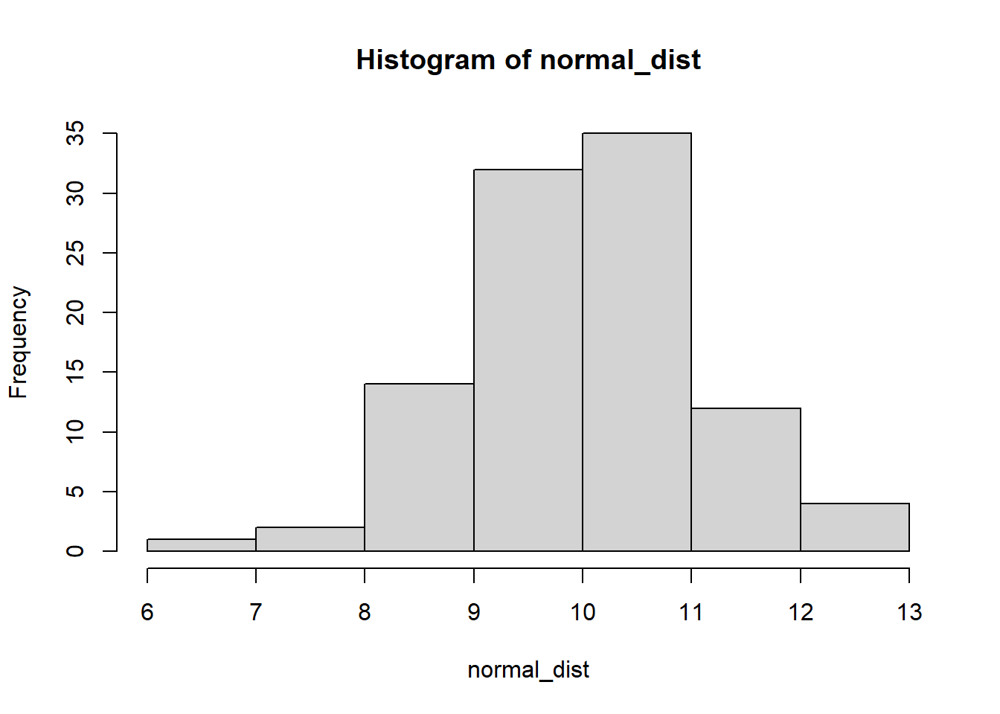

3.1 Data Distributions
3.1.1 Normal Distributions
First we’ll generate a normal distribution with the rnorm() function. This takes 3 arguments: n, mean, sd, which you can see filled in below. While we could print out a list of all these values, it’s not easy to understand a list of numbers
normal_dist <- rnorm(n = 100, ## 100 samples
mean = 10, ## with a mean of 10
sd = 1 ## and a standard deviation of 1
)
normal_dist## [1] 11.506852 11.163672 8.829024 10.273912 9.145279 10.826456 10.285814
## [8] 9.257769 9.915276 11.121125 10.008963 10.132934 10.468814 9.824461
## [15] 10.231834 9.877450 10.609698 12.494186 10.083570 10.048090 9.602716
## [22] 8.881346 8.727424 9.602497 8.842825 8.993454 11.451253 10.629546
## [29] 10.487809 9.422357 8.559793 8.740500 10.178681 9.578870 11.961997
## [36] 9.532973 9.757036 9.624997 8.611452 8.946964 11.575792 8.440022
## [43] 9.535301 9.103334 9.579060 10.122124 10.980792 10.188829 10.379594
## [50] 10.176173 10.290034 9.294644 9.988193 8.533143 7.713494 8.901578
## [57] 9.050893 9.905094 10.273270 10.110082 10.113988 11.068453 10.990468
## [64] 10.430128 10.065292 9.049729 10.256092 10.731507 9.440587 9.580315
## [71] 10.570069 9.320394 10.468605 7.585238 10.659452 8.687053 10.040975
## [78] 10.272310 9.768560 9.451352 9.851917 10.020665 10.396880 13.607474
## [85] 11.326339 8.106845 9.483703 8.828726 8.800159 9.612173 11.390034
## [92] 11.122244 10.409071 9.478901 10.262713 10.042123 9.253726 8.053679
## [99] 10.198707 11.094439Another better way to look at data would be to visualize or plot it. One way to to that is with a histogram, which groups continuous values into bins, then plots the frequency for each bin.
In R, we use the hist() function to plot a histogram of data. We can (try to) control the number of bins with the breaks argument, but note that it doesn’t always match up. The hist() function will adjust based on the distribution of the data.
hist(normal_dist,breaks = 5)
Another way to visualize this would be with a d
3.1.2 What is normal?
3.1.2.1 Quantitative summaries
5num summary * Min, 25th percentile, median, 75th percentile, Max
tab_normal_dist <- summary(normal_dist)We can print the table in R by calling its name.
tab_normal_dist## Min. 1st Qu. Median Mean 3rd Qu. Max.
## 7.585 9.285 10.015 9.923 10.414 13.607Mean, standard deviation
3.1.2.2 Meaningful Comparisons
How to compare apples to oranges? Standardize the units / standardize the data
data1 <- rnorm(n=1000,
mean = 100,
sd = 10)
data2 <- rnorm(n=1000,
mean = 60,
sd = 25)Are these the same distribution?
Any issues??
layout(matrix(1:2, ncol = 2))
hist(data1)
hist(data2)
total_range <- range(data1, data2)Are they the same?
layout(matrix(1:2, ncol = 2))
hist(data1, xlim = total_range)
hist(data2, xlim = total_range)
Numerically / tabularly
Often times its important to tables of summary statistics
norm_comp_tab <- rbind(summary(data1),
summary(data2))
norm_comp_tab## Min. 1st Qu. Median Mean 3rd Qu. Max.
## [1,] 67.00244 93.38442 100.20544 99.96125 106.97672 129.4474
## [2,] -27.40409 41.82648 59.14143 59.98934 77.55951 132.0331Making the table a little nicer. Also an example of conditional programming.
rownames(norm_comp_tab) ## they're null## NULLif(is.null(rownames(norm_comp_tab))){
rownames(norm_comp_tab) <- c("data1", "data2")
}When working with Rmarkdown we can take advantage of knitr and pandoc to nice looking tables even easier.
knitr::kable(norm_comp_tab)| Min. | 1st Qu. | Median | Mean | 3rd Qu. | Max. | |
|---|---|---|---|---|---|---|
| data1 | 67.00244 | 93.38442 | 100.20544 | 99.96125 | 106.97672 | 129.4474 |
| data2 | -27.40409 | 41.82648 | 59.14143 | 59.98934 | 77.55951 | 132.0331 |
How transform the data
Simple transformation (multiply all values by 100) * to convert units * other examples?
Complex transformations * log-transformation (DEE: not a fan) * z-scores (DEE: a better option)
Why transform the data? * Real world applications? * Is it always appropriate to transform data?